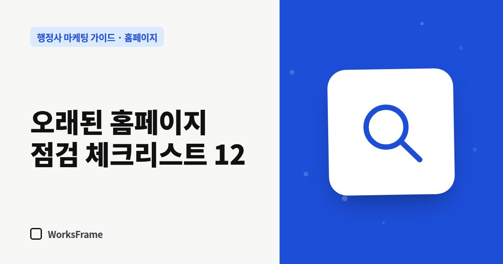

홈페이지
오래된 행정사 홈페이지 점검 체크리스트 12 — 리뉴얼이 필요한 신호
한 줄 답
12가지를 휴대폰으로 확인해 4개 이상 안 되면 손보고, 8개 이상 안 되면 새로 만드는 걸 검토하세요. 전화 버튼과 문의 알림이 안 되면 바로 고치세요.

홈페이지는 만든 날부터 조금씩 낡습니다. 전화번호는 그대로인데 상담 시간이 바뀌었거나, 업무 안내의 기준이 몇 년 전 것일 수 있습니다. 12가지 항목을 휴대폰으로 직접 확인해 보세요.
체크리스트
첫인상
- 첫 화면만 보고 주력 업무가 보이는가
- 대표 행정사의 이름·얼굴·이력이 보이는가
- 마지막 공지·글이 1년 이내인가
모바일
- 휴대폰에서 글자가 확대 없이 읽히는가
- 전화 버튼이 스크롤 없이 보이고, 누르면 바로 걸리는가
- 표나 이미지가 화면 밖으로 넘치지 않는가
정확성
- 주소·전화·상담 시간이 플레이스와 똑같은가
- 업무 안내의 기준(서류, 절차)이 지금도 맞는가
- 수임료 안내가 현재 기준인가
검색과 연결
- 네이버·구글에서 사무소명을 검색하면 홈페이지가 나오는가
- 페이지마다 검색 제목·설명이 따로 있는가
- 문의 폼을 직접 보내 봤을 때 알림이 오는가
결과 보는 법
| 체크 안 된 항목 | 권하는 조치 |
|---|---|
| 0~3개 | 부분 수정으로 충분 |
| 4~7개 | 구조는 살리고 화면·문구를 손보기 |
| 8개 이상 | 리뉴얼을 검토 |
특히 5번(전화 버튼)과 12번(문의 알림)이 안 된다면 개수와 상관없이 바로 고치세요. 문의를 잃고 있을 가능성이 큽니다.
리뉴얼할 때 살릴 것
자주 묻는 질문
리뉴얼하면 검색 순위가 떨어지나요?
주소 구조를 크게 바꾸면서 연결을 하지 않으면 일시적으로 떨어질 수 있습니다. 기존 주소를 유지하거나 새 주소로 연결해 두세요.
혼자 점검하기 어렵다면요?
주소를 보내 주시면 웍스프레임에서 무료로 점검 메모를 보내 드립니다. 점검만 받으셔도 됩니다.